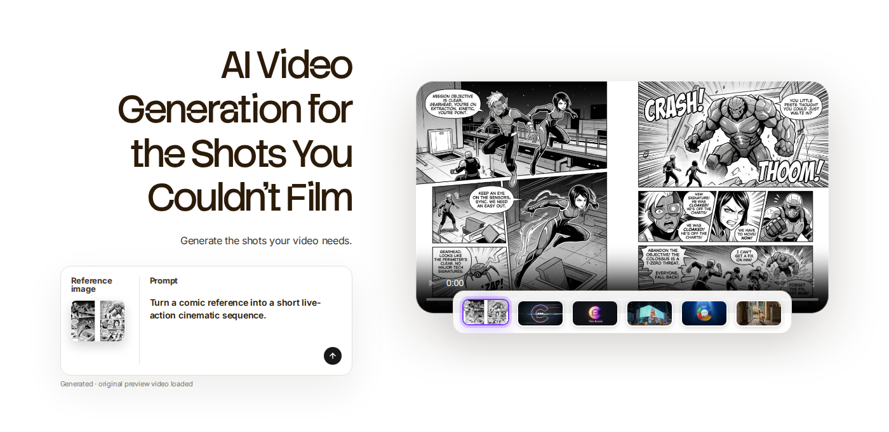

ChatCut A06 · 单 Reference 漫画 → 单视频
这是独立实验版，不覆盖之前的 Review。这里只验证一件事：这个 Feature 应该只有 1 张真实漫画 Reference，以及 1 个对应生成视频。
A06-v2
AI Video Generation for the Shots You Couldn't Film
目标交互：真实漫画稳定展示 → 用户点 Generate → 原视频结果出现并播放。不要展示额外 3 个“素材”。
Baseline 原始版本
Preview 真实可玩版本
1 张真实漫画 Reference
→
Generate
→
1 个真实生成视频
只看 A06 的真实关键帧证据
 Reference 漫画 / trigger 前
Reference 漫画 / trigger 前
Generated video / trigger 后旧 Review 页面保持不变。这个页面只是 A06 的独立候选方案，方便你先判断结构是不是对的。